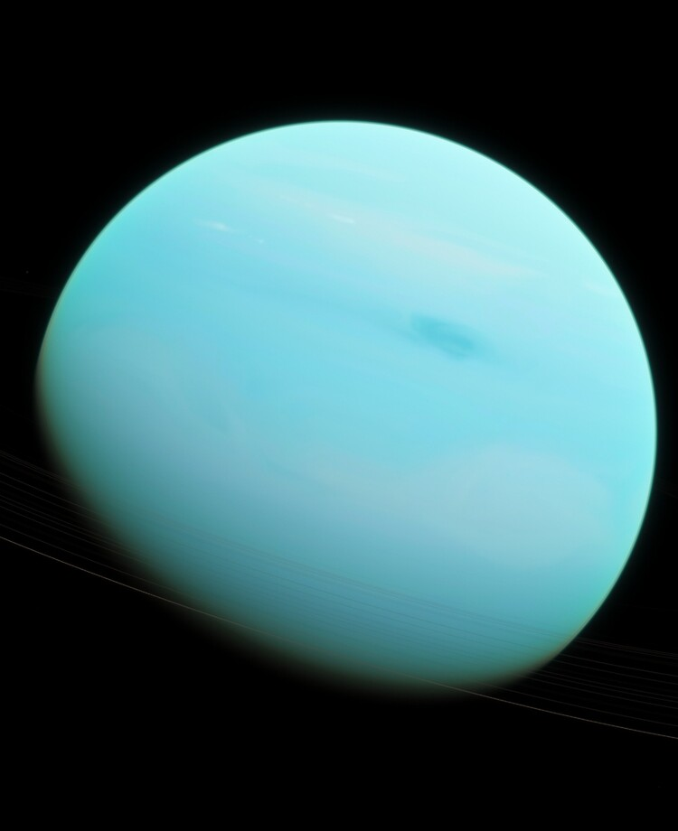

Urano

Urano es el séptimo planeta del sistema solar, el tercero de mayor tamaño, y el
cuarto más masivo. Se llama así en honor de la divinidad griega del cielo, padre de
Crono y el abuelo de Zeus.
Aunque es detectable a simple vista en el cielo nocturno, no fue catalogado como
planeta por los astrónomos de la antigüedad debido a su escasa luminosidad y a la
lentitud de su órbita.
|
|
Miranda
Miranda, también designado como Urano I, es el menor de los cinco satélites
principales del planeta Urano y el último en ser descubierto hasta el
sobrevuelo de Urano por la sonda espacial Voyager 2.
Ariel
Ariel es el cuarto satélite más grande de Urano y el segundo en proximidad
de los satélites principales. Fue descubierto en 1851 por William Lassell y
nombrado por un personaje de dos diferentes obras de la literatura inglesa.
Umbriel
Umbriel es un satélite de Urano descubierto el 24 de octubre de 1851 por
William Lassell, al mismo tiempo que Ariel, y nombrado por un personaje del
poema de Alexander Pope El rizo robado.
Titania
Titania, también designado como Urano III, es el mayor de los satélites del
planeta Urano y el octavo del sistema solar. Descubierto por William
Herschel el 11 de enero de 1787, Titania recibe su nombre de un personaje,
la reina de las Hadas, de la obra de William Shakespeare El sueño de una
noche de verano.
Oberón
Oberón o Urano IV es el más exterior de los satélites principales del
planeta Urano. Es el segundo más grande y masivo de Urano y el noveno más
masivo del sistema solar.
|
|